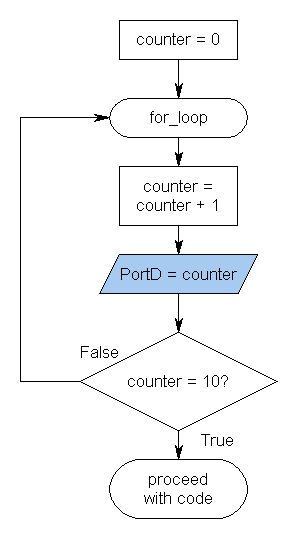

Flow charts are a graphical representation of code, Program states or even SRAM contents, if used in a creative way. Once you know how to use them for code you'll quickly develop your own style to create flow charts for almost anything.
When you think about implementing a special algorithm or peripheral driver it might be better to have a flow chart already done before you start hacking code. That will save lots of time. Trust me. I know. If you have code that is not sufficiently commented or just BIG, analyse it by making up a flow chart. Very often that helps, especially when you got it from the web.
Especially when writing code in assembler they are a great help, because assembler instructions are not always self-explanatory and even well-structured code will get hard to read once it has grown to a certain size.
Here is a small example flow chart:
|  | You can find a good program for editing flow charts at www.rff.com. But a piece of paper will do the job too if you need to make up one. |